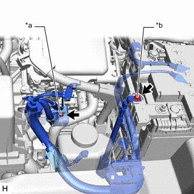
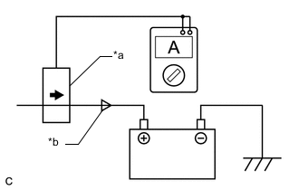
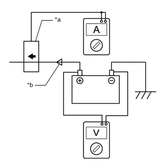

CHARGING SYSTEM ON-VEHICLE INSPECTION
CAUTION / NOTICE / HINT
The necessary procedures (adjustment, calibration, initialization, or registration) that must be performed after parts are removed and installed, or replaced when inspecting auxiliary battery are shown below.
| Replacement Part or Procedure | Necessary Procedure | Effect/Inoperative Function when Necessary Procedure not Performed | Link |
|---|---|---|---|
| Auxiliary battery terminal is disconnected/reconnected | Memorize steering angle neutral point | Lane departure alert system (w/ Steering Control) | |
| Intelligent clearance sonar system*1 | |||
| Simple intelligent parking assist system*1 | |||
| Pre-crash safety system | |||
| Adaptive high beam system | |||
| Parking assist monitor system | |||
| Initialize back door lock | Power door lock control system |
*1: When performing learning using the GTS Click here
PROCEDURE
-
CHECK AUXILIARY BATTERY
-
Check that the auxiliary battery cables are connected to the correct terminals.
If they are not, connect them properly.
-
Check the auxiliary battery for damage and deformation. If severe damage, deformation or leakage is found, replace the auxiliary battery.
-
Check the electrolyte level in each cell.
-
If the electrolyte level is below the lower line, replace the auxiliary battery.
-
If the electrolyte level is below the lower line, add distilled water to each cell. Then, recharge the battery and check the electrolyte specific gravity.
Standard Specific Gravity 1.25 or higher at 20°C (68°F)
-
-
-
CHECK AUXILIARY BATTERY VOLTAGE
-
Turn the power switch off and turn on the high beam headlights for 30 seconds. This will remove the surface charge from the auxiliary battery.
-
Measure the auxiliary battery voltage according to the value(s) in the table below.
Result Tester Connection Condition Specified Condition Result Positive (+) auxiliary battery terminal - Negative (-) auxiliary battery terminal 20°C (68°F), Power switch off 12.0 V or higher Auxiliary battery is OK 12.0 V or less Recharge auxiliary battery
-
-
RECHARGE AUXILIARY BATTERY
-
Recharge the auxiliary battery.
Tech Tips
-
Recharge the auxiliary battery according to the charger's instructions.
-
Apply the appropriate charging current according to the type of auxiliary battery shown in the table below.
Charge Method Charging Current Normal Below 5 A Quick Below 15 A -
-
Turn the power switch off and turn on the high beam headlights for 30 seconds. This will remove the surface charge from the auxiliary battery.
-
Measure the auxiliary battery voltage according to the value(s) in the table below.
Result Tester Connection Condition Specified Condition Result Positive (+) auxiliary battery terminal - Negative (-) auxiliary battery terminal 20°C (68°F), Power switch off 12.0 V or higher Auxiliary battery is OK 12.0 V or less Recharge auxiliary battery
-
-
CHECK AUXILIARY BATTERY TERMINAL, FUSIBLE LINK AND FUSE
-
Check that the auxiliary battery terminals are not loose or corroded.
- Torque:
- Positive (+) Auxiliary Battery Terminal
- 5.6 N*m { 57 kgf*cm, 50 in.*lbf }
- Negative (-) Auxiliary Battery Terminal
- 5.4 N*m { 55 kgf*cm, 48 in.*lbf }
If a terminal is loose or corroded, tighten or clean the terminal.
-
Measure the resistance of each fusible link and fuse for the auxiliary battery charging system.
Standard Resistance Below 1 Ω If the result is not as specified, replace the fusible link or fuse as necessary.
-
-
CHECK AMD TERMINAL
CAUTION:
-

Orange wire harnesses and connectors indicate high-voltage circuits. To prevent electric shock, always follow the procedure described in the repair manual.
-

To prevent electric shock, wear insulated gloves when working on wire harnesses and components of the high voltage system.
-
Remove the service plug grip.
-
Check that the AMD terminal is connected securely, and there is no contact problem.
If there are any arc marks, replace the affected parts.
-

*a Inverter with Converter Assembly Side *b No. 1 Engine Room Relay Block and No. 1 Junction Block Assembly Side Check that the nut for the AMD terminal is tightened to the specified torque.
- Torque:
- Inverter with Converter Assembly Side
- 8.0 N*m { 82 kgf*cm, 71 in.*lbf }
- No. 1 Engine Room Relay Block and No. 1 Junction Block Assembly Side
- 8.0 N*m { 82 kgf*cm, 71 in.*lbf }
If there are no arc marks and the AMD terminal connection is faulty, connect the AMD terminal securely.
-
Install the service plug grip.
-
-
CHECK DC/DC CONVERTER FUNCTION
-

*a Probe Direction *b Current Flowing into Auxiliary Battery Connect the AC/DC 400 A probe to the positive (+) auxiliary battery cable.
-
Turn the power switch on (READY) and leave the vehicle as is until the electric current flowing to the auxiliary battery becomes 10 A or less.
-
Turn on the high beam headlights, and turn the blower motor switch to the HI position and the rear window defogger on.
-

*a Probe Direction *b Current Flowing from Auxiliary Battery Measure the current and voltage according to the value(s) in the table below.
Result Item Tester Connection Condition Specified Condition Current flowing from auxiliary battery Positive (+) auxiliary battery cable Power switch on (READY)
(The high beam headlights are on, the blower motor switch is in the HI position, and the rear window defogger is turned on.)
0 A or less
(No current from auxiliary battery)
Auxiliary battery voltage Positive (+) auxiliary battery terminal - Negative (-) auxiliary battery terminal 13 to 15 V If the result is not as specified, replace the inverter with converter assembly.
-